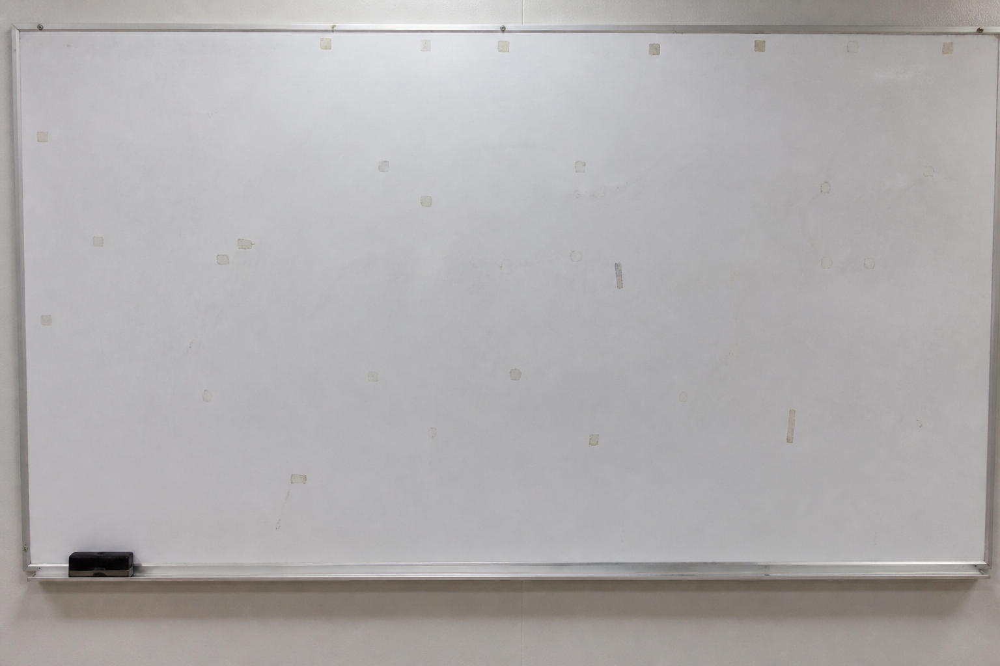

You are Hang Shu
Qingming is not here yet. Cold Food Day just passed. Tiao Wan pressed an oilprint on the counter: the neighbor-ash complaint must get a duty remark tonight. This desk does not approve original offerings. It does not change numbers. You only write a suggestion.
The system lets this shift open three households. Handover pulls unread paper off the desk. Verified sentences stay on the whiteboard. Paper you only saw is taken at first light.
Start a fresh night. Open the leftmost door first Go to the desk and look at the cabinet
Three doors already on the desk
Tiao Wan said open the neighbor-ash complaint first. The other two are on the table too. More households sit in the cabinet. Those wait until you hand over and take a new slot.

Neighbor-ash complaint
Shen Bai reported ash on the Plot 12 neighbor line. Almost no guesswork.
Plot 12 Gu household
Gu Songnian's grave. Private grave or something else — you write it clean only after the door opens.
Martyrs' terrace collective
The grain-depot union batch. Whether the code sits in this household.
Clock

Handover at 05:00. You can hand over even if the remark is unfinished. What stayed on the board can still be used.
Whiteboard

Seen
Verified
See the whole board Director's three-door slip Qiu Maiqiu's note
One oilprint only. County name and garden name are invented. Do not match them to a real garden.